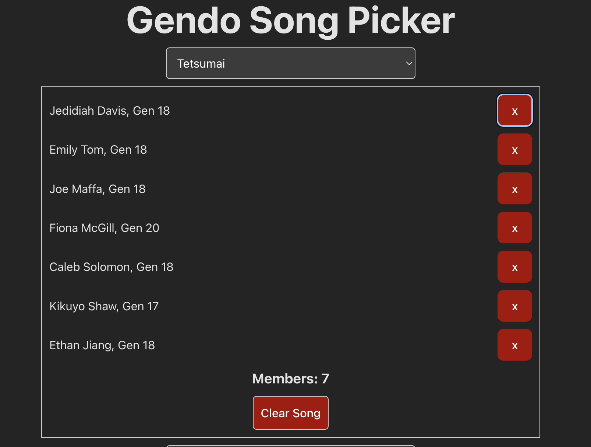
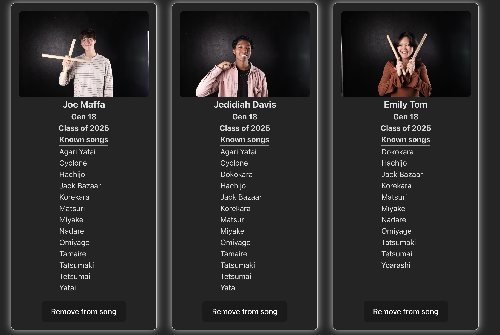
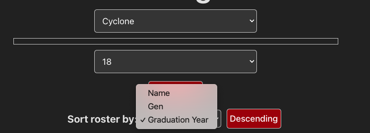
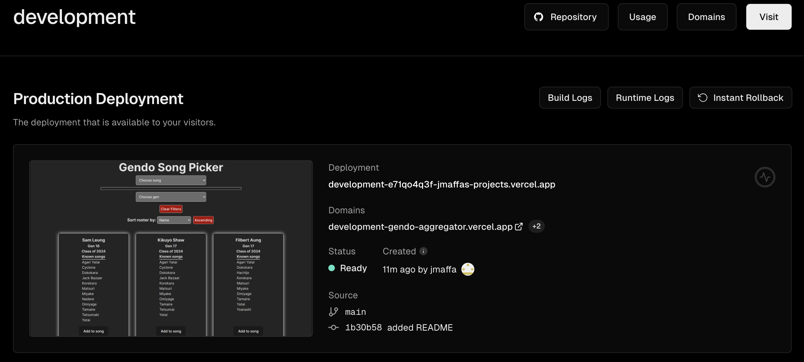

To learn the fundamentals of programming with React, I created a list aggregation system.
After running a competitive analysis on a few websites that offer similar services, I aimed to prioritize X Y and Z in my interface.
I then developed an interface that could be used to appoint people to songs in my drumming group, Gendo Taiko. I then deployed the React application using Vercel.
Competitive Analysis
Develop
Deploy
Competitive Analysis
I began by conducting a competitive analysis on other list aggregation tools in order to compare useful features.
Specifically I compared list aggregators in different domains: playlist making (Spotify), team building (CraftedNBA), and clothing shopping (Abercrombie).
The team building website is the most similar to my project, but I wanted to see what features I could borrow from the other two domains as well.
Features
Spotify
CraftedNBA
Abercrombie
Favorite
Y
Y
Y
Filter
N
N
Y
Sort
Y
N
Y
Search
Y
Y
Y
Suggested Additions
Y
N
N
Visible List on Page
N
Y
N
Multiple card views
Y
N
N
Visible Add to List
N
N
Y
Multiple Removal Routes
Y
N
N
Informative Card
Y
N
Y
In my competitive analysis, I compared features that expedite and simplify the user experience. For example, I found that sites like CraftedNBA with a lot of cards on one page and no sort or
filter features was extremely overwhelming; these functions increase flexibility and efficiency of the user experience. However, it benefitted by having a visible list on the page, allowing me to track what I was adding to my "favorites" list as I used the app without needing
me to navigate to another page like with Spotify's Liked Songs or Abercrombie's Favorited feature. However, I found that Spotify and Abercrombie benefitted from having informative cards with information
that may be used to sort/filter the cards and help the user make a decision on what to add to the table. I also think that having a clearly visible add to list button made
a big difference in expediting the user experience and reducing the scanning a user has to do to get the desired goal of adding the item to the list. Abercrombie does a great job of this using the heart as a metaphor
for the action of adding to favorites. Although this is an overloaded icon across the web and has probably shaped my mental model of what it does, it still has a clear connection to the action it is conveying. Finally, I compared the different
ways that someone could remove an item from the list. Having multiple routes to remove an item offers the user flexibility and improves their usability.
From this competitive analysis, I chose to prioritize having informative cards, clear add and removal buttons, and a clearly visible list in my interface along with the required features of sorting and filtering based on information
that is visible in the cards.
Spotify offers informative cards that can be displayed in multiple ways. However, you cannot currently see
your list of "Liked Songs" from outside of the playlist, and the way to add songs to this list is not immediately clear (need to right click or hover to reveal "Add to Liked Songs").
CraftedNBA has a very minimal interface where the list and its aggregation system are placed front and center. However, it has no sorting
or filtering capability beyond its search functionality. Additionally, the cards give no information about the player you are picking beyond their "salary".
Abercrombie is an online marketplace that offers a lot of customizability to your search with filters based on type of clothing and ascending and descending sort functionality.
Additionally, the button to add something to your favorites is clearly visible on the card. Like Spotify however, you must route to another page to
see your favorites.
Development
For my list aggregation system, I developed a website that can be used to allocate people to songs. In my drumming ensemble, Gendo Taiko,
we often struggle to determine who can be put in what song for each performance. This system allows users to filter members based on their
time in the club (gen), and the songs that they know. When the user picks a song, they will be left with only the members who can play that song.
The user can then add and remove members from that song. If they'd like to sort all the possible members based on graduation year, gen, or name, they also
have the option to do that.
Here are few photos of my webapp in action!

Song and list of members
The aggregate list is clearly visible at the top of the application. Each member can be removed easily and the whole
list can be cleared with one button click.

Member cards
Each card displays important sorting and filtering information like class year, gen, name, and songs they know. This offers
an alternate route to remove people from the song if the user does not want to scroll to the top of the screen again.

Possible sorting and filter options
Users are able to sort by name, gen and graduation year in ascending and descending order. Additionally, they can filter based on gen and songs known.
Deployment
After developing my React application, I used Vercel to deploy it publicly.

Conclusion
Overall this was a great project to learn some of the fundamentals of state management in React. I was able to conduct research of similar systems and pick
the best features to implement in my own project. In creating my application, I learned how to design using a component system and manage passing props up
and down the component tree. Finally, I also gained experience deploying a React application using Vercel.